Notes for Guard
Pictures are shown below for each data set where
guards are successfully placed. All sites where there are too few guards
match an earlier site shown. Where the maximum risk involves a centroid,
there is a gray line between the two items with maximal risk. The minimized
maximum risk is listed, followed by possible guard coordinates that
correspond to the that situation:
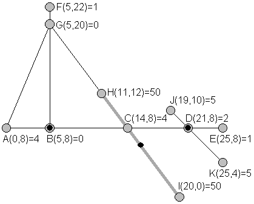
375.00 (5, 8) (21, 8) (15.5, 6) as in the problem text
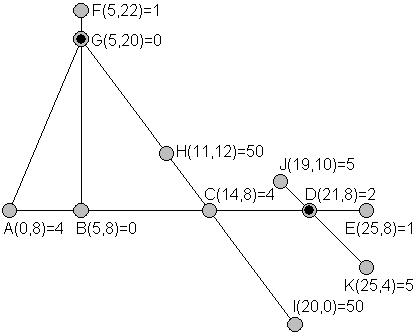
1250.00 (21, 8) (5, 20)
Skip same pic with too few guards
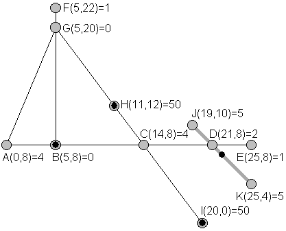
21.21 (5, 8) (11, 12) (20, 0) (22, 7)
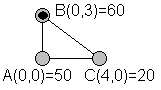
150.00 (0, 3)
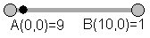
9.00 (1, 0) The centroid is at the weighted average, not the center.
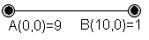
0.00 (0., 0) (10, 0)
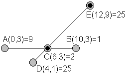
70.71 (6, 3) (12, 9) The second guard could move some.
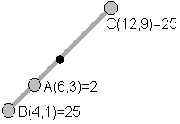
141.42 (8, 5)
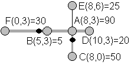
120.00 (4, 3) (8, 1.928571) The second point can wiggle, but not as far
enough from C to reach A, so the first guard is responsible for D. Still
the second guard is close enough to the biggest value at A so that the first
guard does not need to worry about it and is located at a centroid of the
endpoints D and F.
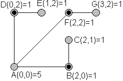
10.00 (2, 0) (0, 2) (2, 2)
Skip same pic with too few guards
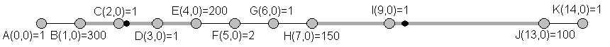
360.00 (2.2, 0) (9.4, 0) Both guards are at points leading to maximal risk
360 with two items.
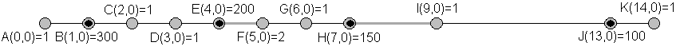
1.99 (1, 0) (13, 0) (4.009901, 0) (7.013245, 0) Here you need to look at
the exact coordinates of the middle two guards. The one close to E has
risks 1.98 while the one near H has the maximal risks 1.99. This one is the
most time consuming, with the maximum number of guards and with the maximal
number points on one corridor, leading to the maximum number of centroid
points to test.
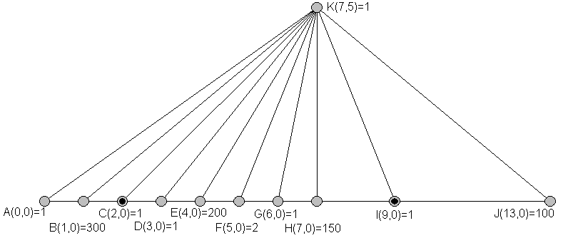
400.00 (2, 0) (9, 0) Each of these guard points has maximum risk of 400
to one side, and could move slightly to reduce the maximum risk, but to keep
K visible, at least one guard cannot move and so the maximum risk remains
400.